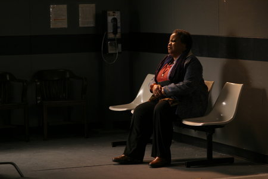

#769 Blind Side - Die große Chance
Alternativ: The Blind Side
Auszeichnungen: 1 Oscars gewonnen für 1 Oscars nominiert 1 GoldenGlobes gewonnen

 IMDB-Wertung: 7.7 / 10
IMDB-Wertung: 7.7 / 10  Metascore: 53
Metascore: 53 
Leigh Anne Tuohy, glücklich verheiratete Ehefrau, zweifache Mutter und stolze Hausfrau in Memphis, ist eine Naturgewalt. Entsprechend vehement setzt sie sich auch ein, als ihr Sohn einen ungewöhnlichen Klassenkameraden mit nach Hause bringt: den übergewichtigen schwarzen Teenager Michael Oher, der nicht schreiben und sich fast nicht artikulieren kann. Aber er hat ein Talent für Football. Und deshalb ist auch Leigh Anne nicht mehr zu bremsen, die Michael bei sich zu Hause aufnimmt. Mögen ihre Beweggründe anfangs nicht nur altruistisch gewesen sein, bald schon liebt sie den Jungen wie ihre eigenen Kinder.
Jahr: 2009
Dauer: 129 Minuten
FSK: 6
Land: USA Studio: Warner Bros.Tonspuren: DD5.1 - ,
Untertitel: Deutsch,
Auflösung: 1080p (1920x1080) Größe: 9574 MB
Genre: Biographie, Drama, Sport
Regisseur: John Lee Hancock
Drehbuch: John Lee Hancock, Michael Lewis
Soundtrack: Carter Burwell
Darsteller:
 Sandra Bullock als Leigh Anne Tuohy
Sandra Bullock als Leigh Anne Tuohy Tim McGraw als Sean Tuohy
Tim McGraw als Sean Tuohy- Quinton Aaron als Michael Oher
- Jae Head als S.J. Tuohy
 Lily Collins als Collins Tuohy
Lily Collins als Collins Tuohy Ray McKinnon als Coach Cotton
Ray McKinnon als Coach Cotton Kim Dickens als Mrs. Boswell
Kim Dickens als Mrs. Boswell Adriane Lenox als Denise Oher
Adriane Lenox als Denise Oher Kathy Bates als Miss Sue
Kathy Bates als Miss Sue Catherine Dyer als Mrs. Smith
Catherine Dyer als Mrs. Smith Andy Stahl als Principal Sandstrom
Andy Stahl als Principal Sandstrom Tom Nowicki als Literature Teacher
Tom Nowicki als Literature Teacher- Melody Weintraub als History Teacher
 Sharon Conley als Investigator Granger
Sharon Conley als Investigator Granger Omar J. Dorsey als 'Big Tony' Hamilton
Omar J. Dorsey als 'Big Tony' Hamilton Irone Singleton als Alton
Irone Singleton als Alton- Hampton Fluker als David
 Rhoda Griffis als Beth
Rhoda Griffis als Beth- Eaddy Mays als Elaine
 Ashley LeConte Campbell als Sherry
Ashley LeConte Campbell als Sherry- Stacey Turner als DMV Employee
-  Elizabeth Omilami als CPS Employee
 Afemo Omilami als CPS Caseworker
Afemo Omilami als CPS Caseworker Maria Howell als CPS Welfare Worker
Maria Howell als CPS Welfare Worker- Patrick G. Keenan als Man in CPS Line
- Catherine Combs als Collins's Friend #1
 Robert Pralgo als Lemming's Associate
Robert Pralgo als Lemming's Associate- Whitney Branan als Lemming's Secretary #1
- Rachel St. Gelais als Little Girl on Playground
 Jody Thompson als Paramedic
Jody Thompson als Paramedic L. Warren Young als Big and Tall Salesman
L. Warren Young als Big and Tall Salesman Brett Rice als Cousin Bobby
Brett Rice als Cousin Bobby- Kevin Nichols als Memphis Policeman
- Matthew Atkinson als Valet Parker
- April Rich als Teacher in Lounge
 John Newberg als Official
John Newberg als Official Joe Chrest als Clemson Coach
Joe Chrest als Clemson Coach Cesar Aguirre als Wingate Fan , uncredited
Cesar Aguirre als Wingate Fan , uncredited- Shannon Brinson als Restaurant Patron , uncredited
- Byron Ashley Bryson als Wingate Football Player , uncredited
- Chrissy Chambers als Student , uncredited
- Morgan Hennum als Student in Cafeteria , uncredited
- Bobby Jordan als Football Player , uncredited
- Amir Kovacs als Lawyer , uncredited
- Melissa LeEllen als High School Student , uncredited
- Carmen Matheny als Core Student , uncredited
- Lynn McArthur als Wingate Fan , uncredited
- Megan McIver als Football Fan , uncredited
- Justin Melick als Football Player , uncredited
- M.V. Oliphant als Game Spectator / Motorist , uncredited
Datei: X:\2009(A-F)\Blind Side - Die große Chance (2009, FSK6, 1920x1080).mkv seit 23.03.2015
Festplatte: HD 2008(G-Z)-2009(A-F)
 Es gibt insgesamt 91 Filme in der Gruppe '2009(A-F)'
Es gibt insgesamt 91 Filme in der Gruppe '2009(A-F)'